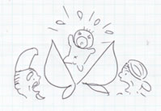
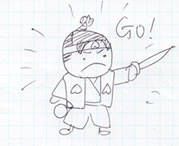
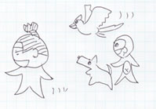
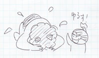

桃太郎
桃太郎の誕生

昔々、あるところに、おじいさんとおばあさんが住んでいました。おじいさんは山へしばかりに、おばあさんは川へ洗濯にいきました。
おばあさんが川で洗濯をしていると、川上から大きな桃が「どんぶらこ、どんぶらこ」と流れてきました。
「はて、これは不思議な桃じゃ。おじいさんに見せてやろう」
おばあさんは桃を家へ持ってかえりました。
家に帰ったおばあさんが、おじいさんと桃を割ってみると、あら不思議！玉のような元気な男の子が、中にいるではありませんか。おじいさんとおばあさんは、その子どもに桃太郎と名付け、大切に大切に育てました。
鬼がやってきた

桃太郎はすくすくと育ち、たいそう元気な男の子になりました。
そのころ、近くの街では鬼がやってきて大暴れをしていました。その暴れ方のひどいことといったら、
- 人々を襲って金品を奪う
- 都の娘をさらってしまう
- なんとお姫様までさらってしまう
- 言うことを聞かないものには暴力も辞さない
街の人たちは毎日鬼におびえながら過ごしていました。その噂は、桃太郎の住む村にも伝わってきました。
「なに、それはけしからん。鬼をわたしがやっつけてきます」桃太郎は勇ましく言いました。それを聞いたおじいさんもおばあさんはびっくり仰天、「お前のような子どもには無理じゃ」と止めるのですが、桃太郎は言うことを聞きません。ついにはあきらめ桃太郎を送り出すことにしました。
「これをもってお行き、気をつけるのじゃぞ」ふたりは桃太郎のためにきびだんごをこさえて、持たせてやりました。桃太郎は「おじいさん、おばあさん、ありがとうございます。かならず、鬼を退治して帰ってまいります。」と元気よく家を飛び出していきました。
仲間との出会い

桃太郎は鬼が住んでいるという鬼が島に向かって歩いていきました。歩いていると3匹の動物がやってきて、桃太郎に語りかけました。
「桃太郎さん、桃太郎さん、お越しにつけたきびだんご、ひとつわたしにくださいな」
桃太郎は
「僕はこれから鬼が島に鬼退治にいきます。ついてきてくれるなら、ひとつずつあげましょう」
と答えました。
「よろこんで、おともいたします」三匹の動物はきびだんごをもらい、桃太郎についていくことにしたのでした。
ついてきた動物は以下のとおり。
- イヌ
- 強く、忠誠心の強いパワータイプ。突破力に定評がある。武力の要。
- サル
- 明るく楽しいみんなのムードメーカー。作戦立案でも頼りになる頭脳派。
- キジ
- 機動力抜群。偵察にも行けるスピード重視タイプ。
決戦！鬼が島

桃太郎はイヌ・サル・キジとようやく鬼が島にたどり着きました。キジが「わたしが様子を見てきましょう」と鬼が島へひとっとび、相手の兵力を調べてきました。サルはそれを表にしました。
| 北の岬 | 西の砂浜 | 南の岸壁 | 東の堤防 |
|---|---|---|---|
| 45人 | 24人 | 1人 | 35人 |
サルが言いました。「南の岸壁は手薄です、まさか登ってはこないと思っているのでしょう。」桃太郎は「なんとか南から攻められないものか」と悩みました。サルは「では、わたしとキジがこっそりのぼり、桃太郎さんとイヌを持ち上げましょう」
かくして上陸作戦がはじまりました。桃太郎とイヌはキジとサルに持ち上げてもらい、まんまと手薄な南から上陸、一気呵成に鬼の大将のもとへと攻め立て、鬼を降参させました。
「ごめんなさい桃太郎さん、わたしたちはさびしかったのです。都の人たちに鬼と呼ばわれ、追い出され、それがくやしかったのです」鬼の大将は涙を流してあやまりました。「奪った宝も、さらった娘もみなお返しいたします」
「お前たちのいい分はよくわかった、さらった人が皆無事なら、許してやろう」桃太郎は言いました。
桃太郎は鬼の奪った宝を都の人たちに返し、娘たちをみな家に帰してやりました。また鬼たちを都に呼び、彼らの人権を守る活動家としても大活躍、一財を成しておじいさんとおばあさんを都に呼びました。鬼にさらわれていたお姫様とも一緒になり、いつまでもいつまでも、幸せに暮らしましたとさ。
めでたし、めでたし。